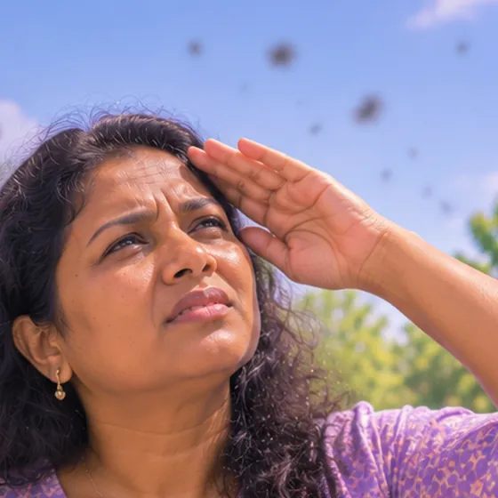

高度近视
近视度数很深，眼球常比一般人长，看远处非常模糊
这是什么
高度近视时，眼球常比一般人长。眼镜可以帮助看清，但眼睛也更容易出现其他问题，所以定期检查眼睛很重要。
- 整个眼球
- 常在儿童时期开始
- 看远处非常模糊
- 就诊科室
- 眼科医生或验光师
- 多发人群
- 儿童和年轻人；常有家族史
- 传染性
- 不传染
- 病程
- 常在成长期加深，之后趋缓；需要终身定期检查
常见表现

眼睛酸胀疲劳视疲劳 
眼前有黑点或丝状物飘动飞蚊症
其他症状
- 不戴眼镜就看不清远处
- 要把东西拿得很近才能阅读
为什么会这样

家族遗传遗传易感性
其他原因
- 成长期间眼球过度变长
- 长时间近距离用眼、户外时间少可能有影响
- 有时与其他眼部或身体疾病有关
出现这些情况请先看医生
- 视力突然丧失或突然改变：立即去医院
- 出现闪光、大量新的飘浮黑点，或视野中有黑幕
- 直线看起来弯曲或波浪状，或视野中央有暗点
- 眼睛疼痛发红，并伴有头痛或恶心
- 孩子视力不断变差：请尽快看医生
如果有以上情况，请先看医生，再来做调理。
本页只是一般性的健康资讯。请继续按时服用平常的药物，并继续看医生。
请继续日常治疗
请继续按医嘱服药，并按时复诊。我们的调理是温和的辅助，不能代替医疗。
日常护理
- 每年至少做一次全面眼科检查，或按医生建议
- 按处方佩戴眼镜或隐形眼镜
- 小心重击和剧烈的身体接触运动
- 看书或看屏幕时让眼睛休息，每天到户外走走
- 向眼科医生了解家中孩子的护眼方法
告诉理疗师
- 怀孕
- 糖尿病或皮肤感觉减退
调理师会在开始前和你确认这一项。
常见问题
高度近视是什么？
近视度数很深，眼球常比一般人长，看远处非常模糊。高度近视时，眼球常比一般人长。眼镜可以帮助看清，但眼睛也更容易出现其他问题，所以定期检查眼睛很重要。
高度近视有哪些常见表现？
眼睛酸胀疲劳；眼前有黑点或丝状物飘动
为什么会有高度近视？
家族遗传
有高度近视要怎么照顾自己？
每年至少做一次全面眼科检查，或按医生建议；按处方佩戴眼镜或隐形眼镜；小心重击和剧烈的身体接触运动；看书或看屏幕时让眼睛休息，每天到户外走走；向眼科医生了解家中孩子的护眼方法
AI Body Master 的调理对高度近视有帮助吗？
调理是温和的无针经络养生辅助，不能治疗或治愈高度近视，也不能代替药物或医生。开始前请告诉理疗师。
相关疾病
参考资料: General information based on public health sources such as Mayo Clinic, NHS, Cleveland Clinic and NCBI StatPearls.
页面更新: 2026-11-01